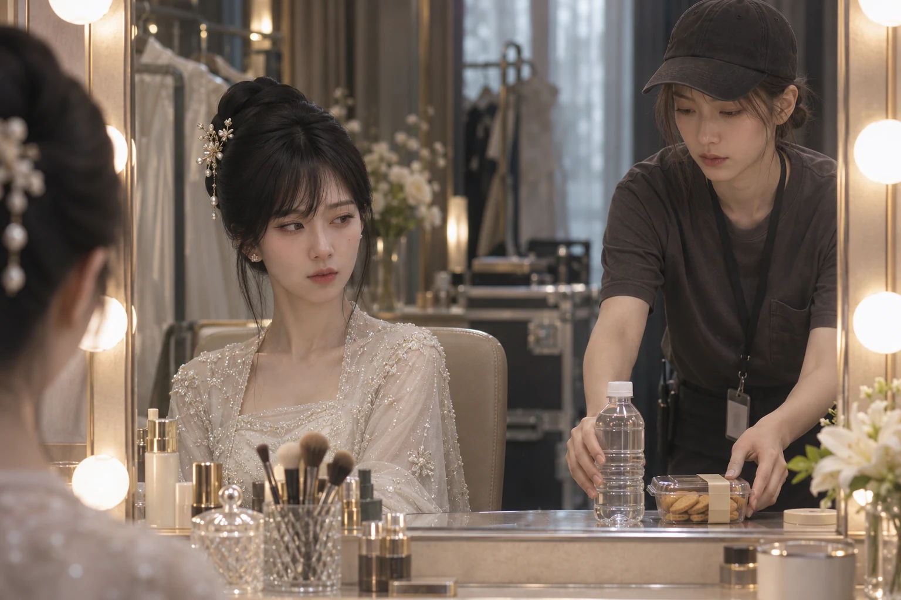
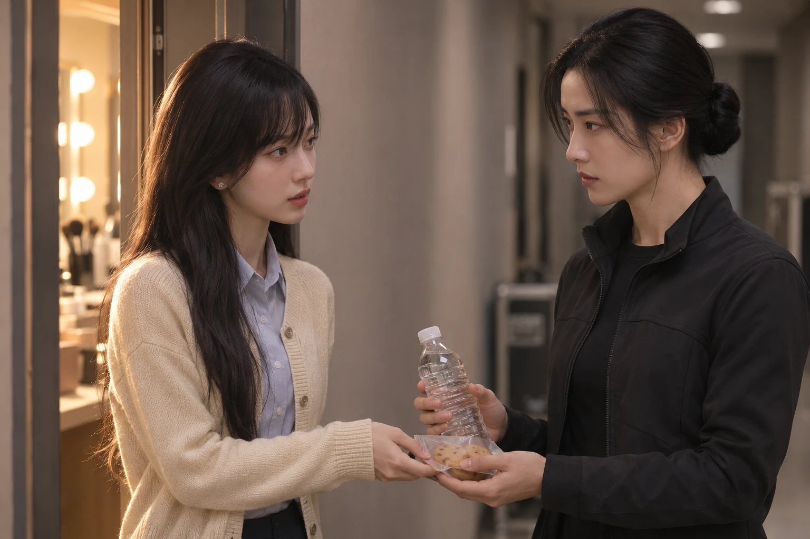

ตอนที่ 22
จี้ปม
ประตูห้องแต่งตัวของซ่งอวิ๋นถูกเคาะเบา ๆ ก่อนทีมงานสาวไม่คุ้นหน้าคนหนึ่งนำน้ำกับขนมเข้ามาภายในห้อง หญิงสาวพิจารณาอีกฝ่ายผ่านกระจก หลายวันที่ผ่านมาเธอไม่เคยเห็นทีมงานคนนี้มาก่อน
อันที่จริงหน้าตาของอีกฝ่ายไม่โดดเด่นสะดุดตา สวมหมวกแก๊ปและเสื้อของทางทีมงาน เป็นประเภทที่เมื่อไปอยู่ท่ามกลางกลุ่มคนแล้วก็มักไม่มีใครสังเกตเห็น เพราะแบบนี้มันถึงได้น่ากังวล เธอถูกสอนมาตลอดว่ายิ่งไม่โดดเด่นเท่าไหร่ ยิ่งสามารถลงมือหรือทำเรื่องร้ายแรงได้โดยที่ไม่มีใครทันได้ตั้งตัว
“ผู้กำกับสั่งให้ฉันเอาน้ำกับขนมมาให้คุณซ่งค่ะ ฉันวางไว้ตรงนี้นะคะ” อากัปกิริยารวมไปถึงน้ำเสียงนั้นก็เหมือนกับทีมงานทั่วไป
“ขอบคุณนะคะ รบกวนแล้ว” ซ่งอวิ๋นพยักหน้า ไม่ปฏิเสธน้ำและขนมที่อีกฝ่ายนำเข้ามา

“ไม่เป็นไรเลยค่ะ เป็นหน้าที่ของฉันอยู่แล้ว” กล่าวจบสต๊าฟสาวคนดังกล่าวก็หลบฉากออกไป
“แต่งหน้าเสร็จแล้ว ถ้าทานขนมแล้วลิปสติกหลุดก็บอกนะคะ เดี๋ยวพี่เติมปากให้ใหม่” ช่างแต่งหน้าจัดเครื่องสำอางบนโต๊ะ พลางมองผลงานตัวเองบนใบหน้างดงามของหญิงสาวรุ่นน้องอย่างภาคภูมิใจ
เดิมทีเพื่อนช่างทำผมทักท้วงเธอว่าหากแต่งหน้าอ่อนเกินไป ยามโดนไฟในสตูดิโอส่องแล้วหน้าจะดูซีดเกินไปหรือไม่ แต่ซ่งอวิ๋นมีเครื่องหน้าชัด มีขนตางอนยาวเป็นแพสีดำสนิท ไม่ต่างจากคิ้วที่เรียงเส้นสวยงาม โครงหน้าแบบนี้ไม่ต้องประโคมมากเกินไป
“ฉันไม่ทานแล้วค่ะ เวลาตื่นเต้นแล้วท้องไส้ปั่นป่วนตลอด กลัวต้องวิ่งเข้าห้องน้ำตอนรายการออกอากาศ” ซ่งอวิ๋นว่าพร้อมลูบท้องเบา ๆ
อันที่จริงเธอไม่กล้าดื่มน้ำและขนมที่ทีมงานสาวไม่คุ้นหน้ามาให้ ไม่ว่าคนคนนั้นจะเป็นคนน่าสงสัยหรือไม่ แต่เธอต้องระวังไว้ก่อน อย่างไรตอนนี้พี่สาวนอกสมรสผู้นั้นก็อยู่ในสตูดิโอ อะไรก็เกิดขึ้นได้ทั้งนั้น
อีกอย่างตอนนี้เธอกำลังทำให้หลาย ๆ อย่างเปลี่ยนไป ดังนั้นสิ่งที่เห็นในฝันบางเรื่องอาจไม่เกิดขึ้น แต่ก็มักจะมีเรื่องใหม่มาแทนที่ เพราะดูแล้วพี่สาวนอกสมรสคนนี้ปรับตัวตามสถานการณ์ได้เก่งกาจอย่างยิ่ง
“แต่ขนมอันนี้ดูน่าอร่อยมากเลย ถ้าน้องอวิ๋นไม่ทาน พี่ขอเสียมารยาทแล้วนะคะ” ช่างแต่งหน้ากำลังหิวจนใกล้หน้ามืด จึงปรี่เข้าไปหยิบคุกกี้ในจานเข้าปากหนึ่งชิ้น
ซ่งอวิ๋นห้ามไม่ทัน เห็นอีกฝ่ายกำลังจะหยิบคุกกี้ชิ้นที่สองใส่ปากตามไปติด ๆ เธอจึงแสร้งลุกจากเก้าอี้แล้วทำท่าจะสะดุดล้ม เพื่อดึงความสนใจจากอีกฝ่าย “ว้าย!!”
“น้องซ่ง เป็นยังไงบ้างคะ เจ็บตรงไหนหรือเปล่า” ช่างแต่งหน้าสาววางขนมแล้วถลาเข้าไปพยุงพร้อมสีหน้าตื่นตระหนก
“เจ็บขานิดหน่อยค่ะ..”
“นั่งพักก่อนนะคะ เดี๋ยวพี่ออกไปหายามาทาให้”
คล้อยหลังช่างแต่งหน้า ร่างอ้อนแอ้นก็เรียกบอดี้การ์ดสาวที่ยืนอยู่ระหว่างทางเชื่อมห้องแต่งหน้าและห้องพักของผู้เข้าแข่งขัน ให้มานำน้ำและขนมต้องสงสัยไปเก็บไว้ เพื่อตรวจสอบภายหลังว่าในอาหารมีสิ่งอื่นเจือปนอยู่หรือไม่
“ฝากด้วยนะคะ”
“รับทราบค่ะคุณหนู”
“เดี๋ยวค่ะ พี่เห็นหน้าทีมงานที่เอาขนมกับน้ำมาส่งให้ฉันหรือเปล่าคะ”
“เห็นค่ะ.. คุณหนูมีอะไรหรือเปล่าคะ”
“พี่ลองไปถามผู้กำกับหูหน่อยค่ะว่าส่งขนมมาให้ฉันหรือเปล่า”
“ได้เลยค่ะ เดี๋ยวดิฉันจัดการให้”

บอดี้การ์ดสาวสับขาออกไปด้วยท่าทางทะมัดทะแมง เมื่อช่างแต่งหน้ากลับมาอีกครั้งก็พบว่าขนมและน้ำไม่มีแล้ว แต่เธอไม่ได้คิดอะไรมาก บางทีทีมงานอาจมาเก็บออกไปเพราะเห็นซ่งอวิ๋นไม่ทาน
“ใกล้ถึงเวลาแล้ว ฉันไปสูดอากาศสักหน่อยนะคะ” ซ่งอวิ๋นตัดสินใจออกไปที่ริมระเบียงของสตูดิโอถ่ายทำ ตอนนี้ใกล้เข้าสู่ฤดูใบไม้ร่วง อากาศไม่ร้อนจนแสบผิว มีลมเย็น ๆ พัดมาเป็นระยะ ๆ ซ่งอวิ๋นสูดลมหายใจเข้าลึก ๆ ตั้งสมาธิเพราะเหลือเวลาเพียงสิบนาทีเท่านั้น
“มาอยู่ตรงนี้นี่เอง”
สมาธิที่ซ่งอวิ๋นรวบรวมไว้หายวับไปกับตา เธอหันกลับไปมองผู้มาใหม่ แววตาไร้อารมณ์และเบื่อหน่าย ซ่งหว่านผลุบ ๆ โผล่ ๆ อยู่รอบตัวเธอเช่นนี้ เหมือนผีไม่มีผิด
แต่ก็ดีเหมือนกัน มีโอกาสได้คุยกันสองต่อสองเสียที เธอเองก็รอจังหวะนี้อยู่
“เธอนี่ปากไม่ตรงกับใจนะ”
“หมายถึงอะไรคะ” ซ่งหว่านทำตาโต “ฉันแค่อยากมาคุยกับคุณซ่ง เพราะเมื่อเดือนที่แล้วฉันทำให้คุณโดนคุณพ่อต่อว่าโดยไม่ได้ตั้งใจ”
“ไม่น่าถามนะ เธอบอกว่าไม่อยากสร้างความลำบากใจให้ฉัน แต่เจอหน้ากันทีไรเธอก็ไม่เคยหลีกเลี่ยงสักครั้ง แถมจงใจเข้ามาคุยกับฉันเสมอ ฉันได้ยินเธอพูดคำว่าขอโทษซ้ำแล้วซ้ำเล่า หรือเธอชอบฉัน อยากให้ฉันเรียกเธอ ‘พี่สาว’ งั้นเหรอ” ซ่งอวิ๋นกะพริบตาปริบ ๆ ดูแล้วไร้เดียงสาและน่าหมั่นไส้ในเวลาเดียวกัน
“ฉันไม่กล้าหรอกค่ะ คุณซ่งเองก็ไม่เต็มใจรับฉันเป็นพี่สาวด้วย” ซ่งหว่านก้มหน้าลงอย่างเศร้าสร้อย
“เรามาพูดกันแบบตรงไปตรงมาดีกว่า เสแสร้งไปก็ไม่มีประโยชน์ วันนั้นเธอจงใจยื่นขาออกมา ตั้งใจทำให้ฉันอับอาย”
แววตาซ่งหว่านแปรเปลี่ยนไปฉับพลัน ปลายนิ้วกระตุกน้อย ๆ น้ำเสียงที่เคยนุ่มนวลดุจสายน้ำก็หนักขึ้นไปด้วย “เธอจงใจใช่ไหม”
“เธอเองก็จงใจนี่นา ฉันแค่ทำตามสิ่งที่เธอต้องการ ยังไงวันนั้นเธอก็ตั้งใจให้ฉันล้มอยู่แล้ว ฉันเลยดึงเธอมาเป็นเบาะมนุษย์ นุ่มใช้ได้เลยนะ” สีหน้าแววตาซ่งอวิ๋นยังคงไร้เดียงสา คล้ายว่านั่นเป็นสิ่งที่ควรเกิดขึ้น
“...” ซ่งหว่านกัดฟันกรอด พลางหอบหายใจหนัก ๆ ซ่งอวิ๋นยังคงยั่วโมโหเธอได้เสมอ ไม่ว่าชาตินี้หรือชาติก่อน หล่อนก็ทำให้เธอเกลียดจนถอนตัวไม่ขึ้น
“จริง ๆ เราต่างคนต่างอยู่ได้นะ ถึงเธอจะเกิดเป็นลูกนอกสมรส แต่ตอนนี้พ่อก็เลี้ยงดูเธออย่างดีไม่ใช่เหรอ พ่อรักเธอมากกว่าฉันอีก เธอยังต้องแส่หาเรื่องใส่ตัวไปเพื่ออะไร เกลียดฉันมาก? หรือปมของเธอมันใหญ่ถึงขนาดต้องทำให้คนอื่นเจ็บปวดเหมือนตัวเอง” ซ่งอวิ๋นหุบยิ้มฉับ น้ำเสียงใสซื่อแกมยั่วยุก็ดูไร้อารมณ์ทันควัน
ซ่งหว่านแทบกระอักเลือด แต่เธอมองเห็นจุดอ่อนของซ่งอวิ๋นอย่างรวดเร็ว “เธอรู้ตัวด้วยเหรอว่าพ่อไม่รัก แล้วรู้หรือเปล่าว่าเขาเซ็นยกสมบัติส่วนตัวให้ฉันตั้งครึ่งหนึ่ง”
“อ่า..ในที่สุดก็ยอมถอดหน้ากากเสียที” ซ่งอวิ๋นไหวไหล่ “พอดีฉันเกิดมาบนกองเงินกองทอง ในฐานะหลานสาวคนเดียวของตระกูลซ่ง ของนอกกายพวกนั้นฉันได้มามาก จนไม่รู้แล้วว่าจะเอามาทำไม ดีใจด้วยนะที่พ่อยกสมบัติครึ่งหนึ่งให้เธอ”
เจอหมัดนี้เข้าไป ซ่งหว่านจุกขึ้นมาถึงคอหอย ปลายเล็บจิกอยู่กลางอุ้งมือจนเริ่มมีเลือดซึมออกมานิด ๆ
“ทำไมถึงเงียบไปแบบนั้นล่ะ หรือจริง ๆ แล้วเธอคิดว่าตัวเองควรอยู่ในฐานะคุณหนูใหญ่ของตระกูลซ่ง”
“หุบปาก” ซ่งหว่านกดเสียงต่ำ สะกดกลั้นอารมณ์จนดวงตาแดงก่ำ
ซ่งอวิ๋นมองเห็นตัวตนบ้าคลั่งที่ซ่อนอยู่ข้างในอีกฝ่าย เธอแสร้งกอดตัวเองอย่างกล้า ๆ กลัว ๆ “เอาละ ฉันไม่พูดแล้วก็ได้ อย่าทำหน้าเหมือนจะฆ่าฉันแบบนั้นสิ”
“...” ซ่งหว่านพยายามไม่ปล่อยให้อารมณ์อยู่เหนือเหตุผล เธอกลับมาเกิดใหม่ เป้าหมายเพื่อทำลายตระกูลซ่ง เธอจะถูกยั่วยุแบบนี้ไม่ได้
“โอ๊ะ ถึงเวลาขึ้นเวทีแล้ว ไปนะ..พี่สาว” ซ่งอวิ๋นเยื้องย่างกลับออกไปจากระเบียง
ต่างฝ่ายต่างทราบดีว่าบทสนทนานี้จะเป็นความลับ เพราะไม่มีใครได้พกอุปกรณ์สื่อสาร แม้แต่ทีมงานเองก็ยังต้องเก็บโทรศัพท์ไว้ในล็อกเกอร์ จึงไม่ต้องกลัวว่าจะถูกอัดเสียง
แต่ครั้งนี้หน้ากากซ่งหว่านถูกดึงออกมาแล้ว ต่อให้เสแสร้งต่อหน้าคนอื่นอย่างไร เธอก็เสแสร้งกับซ่งอวิ๋นไม่ได้อีก หญิงสาวอยากตีอกชกหัวตัวเอง เผลอปล่อยให้อารมณ์อยู่เหนือเหตุผลได้อย่างไร
...
บอดี้การ์ดสาวกลับมารายงานซ่งอวิ๋นอีกครั้ง คราวนี้เธออยู่ด้านหลังเวที จึงได้แต่กระซิบเบา ๆ
“ผู้กำกับหูแจ้งว่าไม่ได้ให้ใครเอาขนมกับน้ำไปให้คุณหนูเลยค่ะ คุณหนูทานเข้าไปหรือเปล่าคะ” สีหน้าเธอเคร่งเครียด เกรงว่าในน้ำและอาหารจะมีสารพิษเจือปน
“ฉันไม่ได้ทาน แต่พี่ช่างแต่งหน้าทานไปแล้วค่ะ พี่ช่วยแจ้งผู้กำกับอีกทีนะ แล้วบอกคนของเราว่าให้เตรียมรถไว้ เผื่อต้องไปโรงพยาบาลฉุกเฉิน” ซ่งอวิ๋นสูดหายใจเข้าลึก ๆ นึกถึงพี่ช่างแต่งหน้าผู้อัธยาศัยดีและน่ารักคนนั้นแล้ว เธอไม่อยากเป็นต้นเหตุให้อีกฝ่ายเจอเรื่องพวกนี้เลยสักนิด
“คุณซ่งเตรียมตัวนะครับ ใกล้ถึงเวลาขึ้นเวทีแล้ว” ทีมงานแจ้งซ่งอวิ๋นเป็นครั้งสุดท้าย ก่อนจะนำทางพิธีกรขึ้นเวทีเพื่อเปิดรายการอย่างเป็นทางการ
ทันทีที่พิธีกรหนุ่มก้าวขึ้นเวที ไฟก็สาดส่องมาที่เขา ใบหน้าหล่อเหลาและความสามารถในการพูดทำให้ผู้ชมตื่นเต้นไปด้วย ช่องทางถ่ายทอดสดไหลเป็นสายน้ำ
[ฉันอยากรู้จริง ๆ เซอร์ไพรซ์ที่โปรดิวเซอร์บอกเป็นใคร จะใช่คนที่ฉันเดาไว้หรือเปล่า]
[ชอบเวทีจังเลย ดูอลังการ แสงสีเสียงจัดเต็ม ลงทุนไปเท่าไหร่กันนะ]
[ฉันได้ข่าวลือมาว่าเซอร์ไพรซ์รายการก็คือซ่งอวิ๋น เด็กน้อยมหัศจรรย์ที่พวกเราคิดถึง]
[!!]
[!!!]
[บ้าน่า อย่ามาหลอกให้ดีใจเลย น้องอวิ๋นของฉันจะไม่กลับมาร้องเพลงบนเวทีอีกแล้ว ถ้าจำไม่ผิดเธอมาจากตระกูลใหญ่ ผ่านมาแล้วหลายปี ตอนนี้ต้องโตเป็นสาวสวยแล้วแน่ ๆ]
ซ่งอวิ๋นยังไม่รู้ว่าพี่ช่างแต่งหน้าเป็นอย่างไร เธอก็ต้องขึ้นเวทีเสียแล้ว หญิงสาวสูดลมหายใจเข้าลึก ๆ ก่อนทำใจให้สงบ แล้วปรากฏตัวบนเวทีด้วยรูปลักษณ์มั่นใจไม่ต่างจากเมื่อหลายปีก่อน